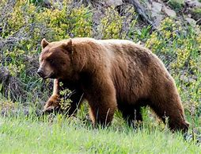
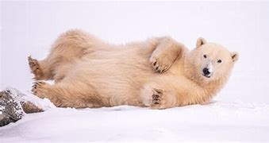
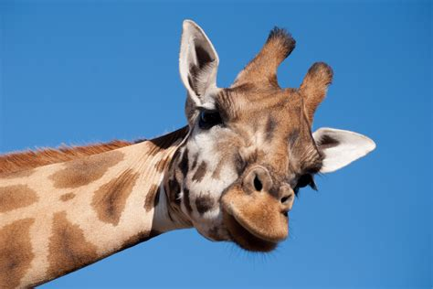
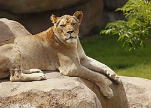
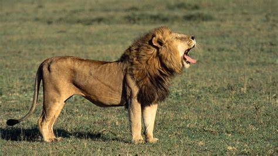
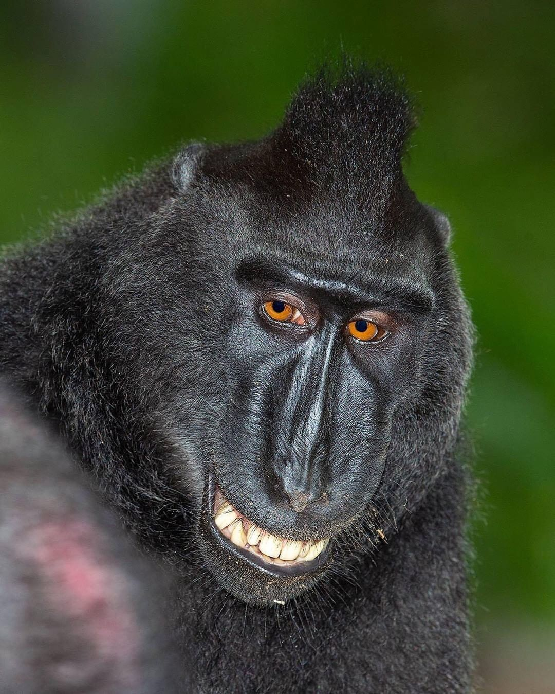
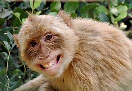
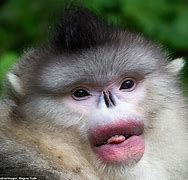
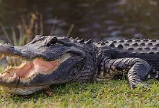
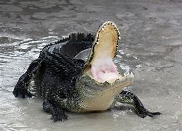

Welcome to our interactive children's zoo! Feed the hungry carnivores! Run with the stampeding herbivores! Whee!
Bears
-

Ollie is a 4-year-old Male Grizzly (or Brown) Bear. He's retired from his acting career where he served as an extra in over 40 films in the nature documentary and horror genres. He sure loves chasing people! Click here to learn more about Grizzly Bears -

Mona is our 6-year-old female Polar Bear. At around 1,300 pounds, Polar Bears are the largest carnivores on Earth!
Giraffes

Frankie is one of our two female giraffes. The word Giraffe is French for "super weird".
- 
Coconut is our other giraffe. Did you know that giraffes are just really old horses? And you can tell the age of a giraffe by how long its neck is? Coconut is about 380 years old!
Lions
-

Mella is our adult female lion. Females do all the hunting in a pride of lions.
-

Karl is our adult male lion. He is a proven man-eater!
Karl
Monkeys
-

Cookie is our Mohawk Monkey.
-

Earl is our Beige Monkey.
-

Banana Pudding is our Reese's Monkey. He stuck his face into a running vacuum cleaner.
Alligators
-
Wren is our first alligator. She likes long walks on the beach.
-

Aspen is an American Alligator. He likes surprizing octagenarians on golf courses.
-  Mika